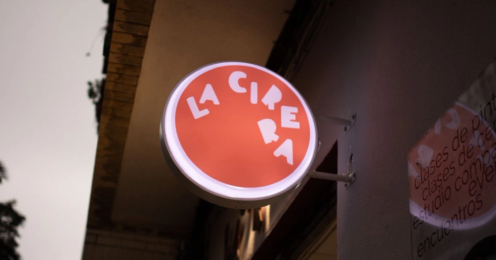
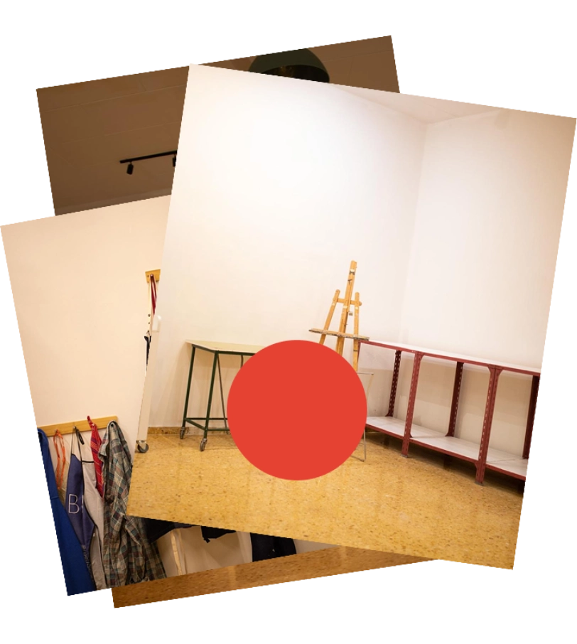
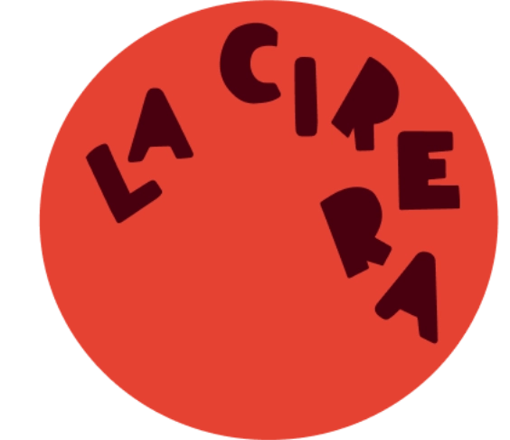
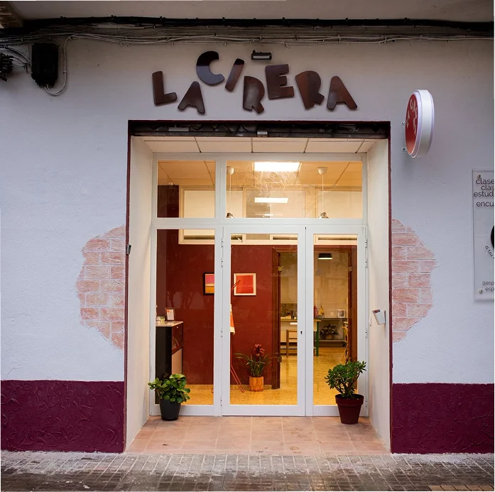
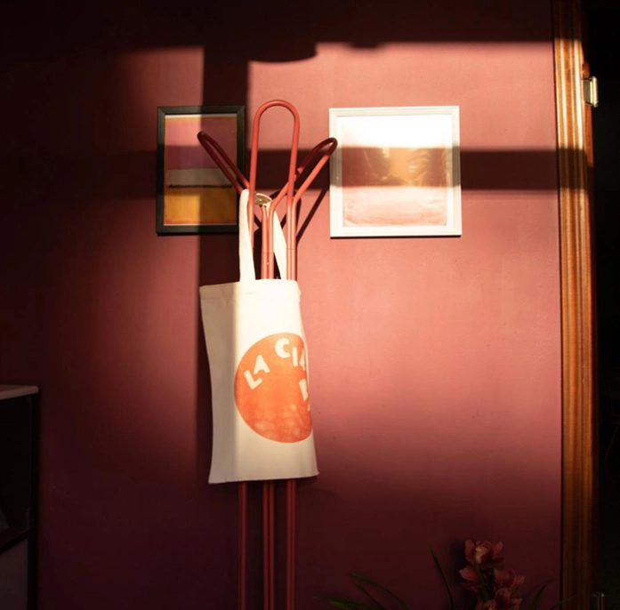

proyecto- La Cirera
Identidad visual

La Cirera es un nuevo espacio creativo en Valencia (España) que ofrece clases de pintura y cerámica, exposiciones y encuentros de artistas. Se trata de un lugar dinámico que arranca con gran energía y entusiasmo, con el objetivo de acoger no solo una variedad de actividades, sino también públicos diversos.
El proyecto consiste en crear una identidad gráfica para este nuevo espacio. El trabajo se centra en desarrollar un logotipo, una paleta de colores definida y elementos gráficos reconocibles.

La idea
«La Cirera» significa «cereza» en valenciano. La identidad gráfica se diseñó para complementar el nombre del proyecto. La imagen de la cereza ha influido notablemente en la paleta de colores y también confiere un doble sentido al círculo rojo: representa un punto de encuentro, pero a la vez nos recuerda a la fruta.



Al igual que ocurre con el círculo rojo, las letras desordenadas y en movimiento pasan a formar parte de la identidad más allá del logotipo.